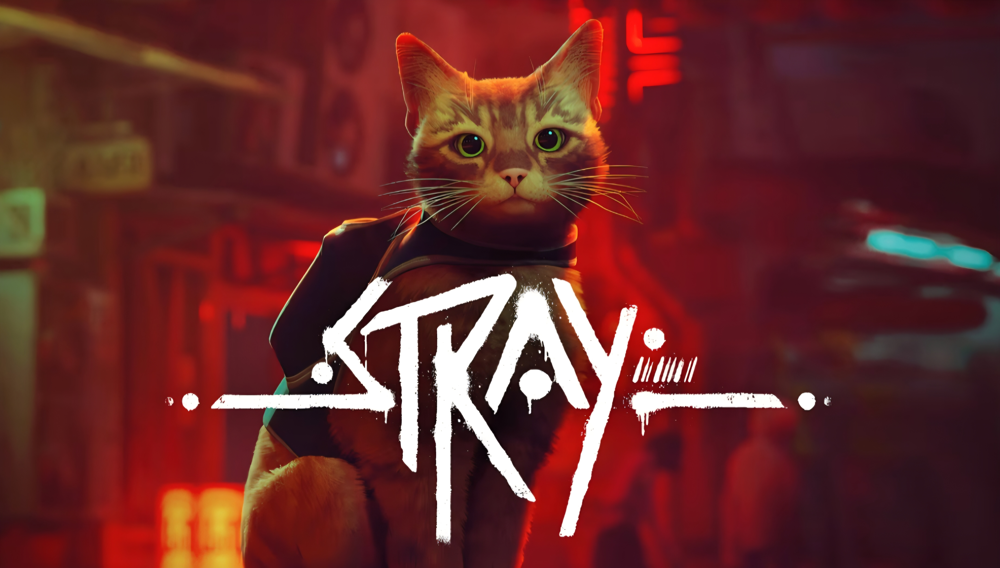
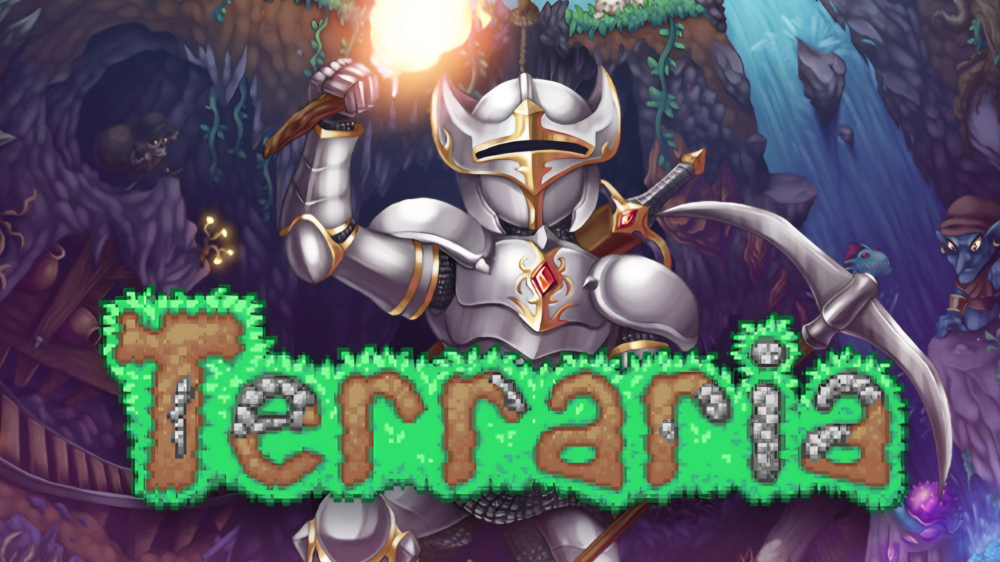
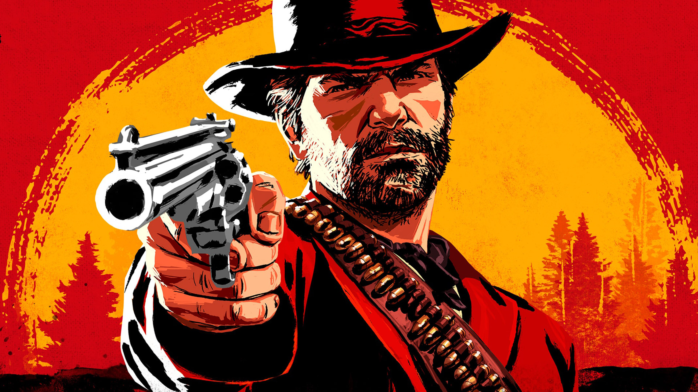
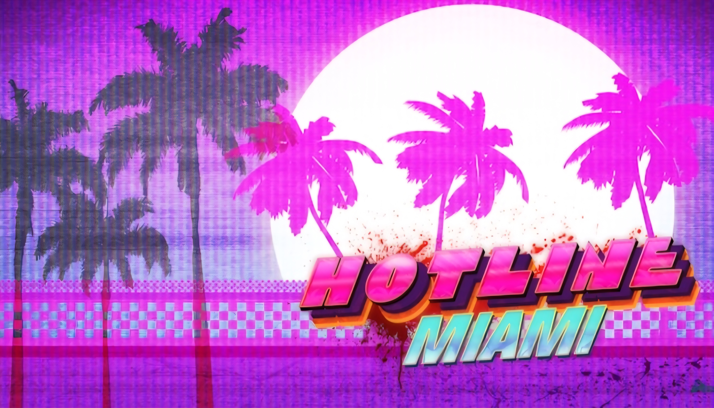
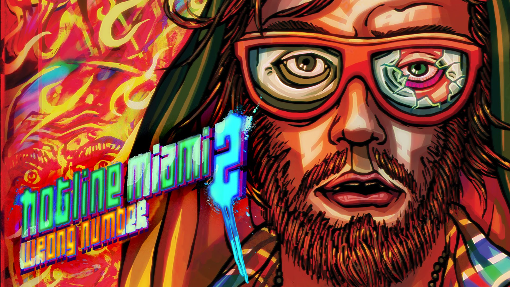
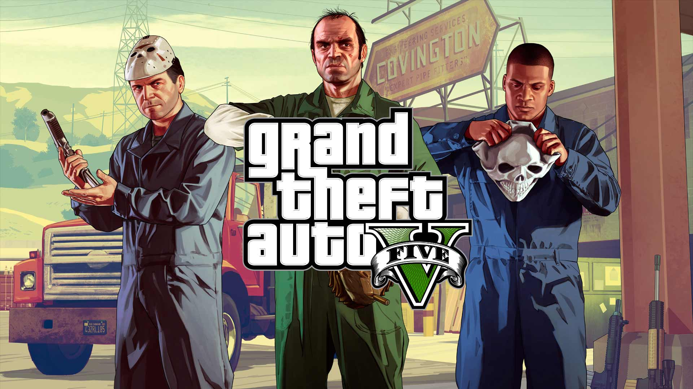

Stray

Genre: Adventure
Developer: BlueTwelve Studio
Publisher: Annapurna Interactive
About: A game where you unwillingly fall inside a futuristic city.
You explore and make your way through the slums and then midtown
trying to escape and free everybody with your robot companion, b-12.
Stray has realistic graphics and a great gameplay. Despite that the developers
made sure to optimize it beautifully so that players with older systems
can experience the game at a high and consistent frame rate too.
The game is 30 dollars / euros on steam
Stardew Valley

Genre: Simulator
Developer: Eric Barone
Publisher: Chucklefish originally, then Eric Barone
About: A relaxing game in which you farm and build stuff. Stardew Valley is a game
where you spend your time farming, building stuff, exploring and having fun overall!
It also has caves where you can go mine. It has much content and it is a 2d indie game
made by 1 single person. If you want to support him, go and buy it on steam here.
Terraria

Genre: 2D sandbox
Developer/Publisher: Re-Logic
About: Terraria is a 2d game with tons of exploration and content. It is a sandbox game meaning
its a world that you can do anything in. It is like minecraft but 2d and not blocky.
It has a ton of structures, epic boss fights and tons of exploration. As well as great
weapons and progression. It is also an indie game so if you want to support the developers,
consider getting it on steam.
Red Dead Redemption 2

Genre: Open world action
Publisher/Developer: Rockstar Games
Gameplay: Combat, Exploration, Riding your horse, survival
About: You are playing as Arthur Morgan, riding your horse in the southwest. You watch your gang slowly fall
apart and the place that you came to live in outside of civilization and finally find
peace, slowly die out. While in the past you were a deadly criminal who killed
without hesitation, you try to change. You start doing good for people who in the past you had
been bad to. And you also stop committing crimes. Red dead Redemption 2 has great, realistic graphics.
It is though extremely optimized and can run greatly on slower or older systems. You can buy it
here for 60 dollars (or whatever currency obviously).
The Last Of Us Part I

Genre: Story/ action game
Publisher: Sony
Developer: Naughty Dog
Gameplay: You shoot, survive, kill infected and real humans
About:A fungus called Cordyceps has broken out and left humanitty in pieces. You play as Joel in a world full of zombie-like creatures. You survive through getting ammo
from infected or humans you stumble across. The game is about emotions, survival And
the character's relationship with each other. The game is 60 euros / dollars on steam
but frequently goes on sale.
The Last Of Us Part II Remastered

Genre: Story/ action game
Publisher: Sony
Developer: Naughty dog
Gameplay: you shoot, survive, kill infected and real humans
About: The Last Of Us II is a direct sequel to part 1, so I really recommend playing part I first.
it is set a few years after part 1 and is driven by Ellie's anger and revenge. It explores what anger does to people
and how far it can change them. The game is 50 euros / dollars on Steam. But also gets discounted often
Hotline Miami

Genre: Action, Arcade
Developer: Dennaton Games
Publisher: Developer Digital
About: Hotline Miami is a fast paced arcade-type game set in the Miami 1980s. You wear a mask and shoot and kill
people. Hotline miami has an incredible story and many useful lessons even if it looks like quite the opposite.
It is really fast paced and you die in one hit, but you respawn immediately so its about learning the level.
It is also partly known for its great soundtracks and its really violent, so not for everyone. The gameis 10 euros / dollars on steam
Hotline Mami 2: Wrong Number

Genre: Action, Arcade
Developer: Dennaton Games
Publisher: Developer Digital
About: Hotline Miami 2: Wrong Number is a direct sequel to Hotline Miami, and even though it has better gameplay, I really recommend playing part 1 first. The game is a top-down action game and it is really fast-paced.
It is really violent, so it is not recommended for everybody. Hotline Miami 2 has a great story but also, real life lessons which are really important and helpful.
It shows the player about how violence just results in more violence, and many more. Hotline Miami 2: Wrong Number is 15 dollars / euros on steam.
Grand Theft Auto 5

Genre: Action, Open world
Developer: Rockstar North
Publisher: Rockstar Games
About: Grand Theft Auto 5 is a huge, open world game set in the fictional city of Los Santos. It explores the consequences
of when a you street hustler, a rich criminal and a Maniac meet and commit crimes together. The game has 3 main protagonists,
Frankil, Michael and Trevor. At the start of the game though, there is another character called Brad. GTA 5 has a great and long story,
as well as much exploration and traveling around the map. You can kill NPCs and get 5 star wanted, or do anything else youu want and it has no concequences.
I really recommend playing Grand Theft Auto 5 and it is 30 dollars / euros on steam